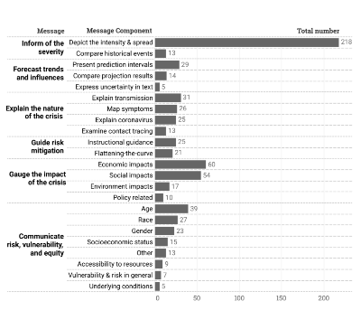
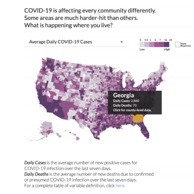
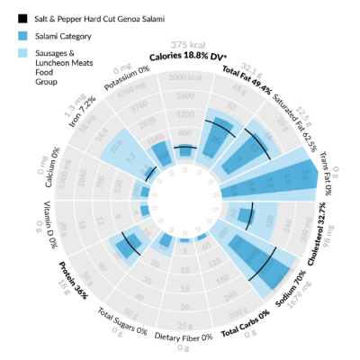
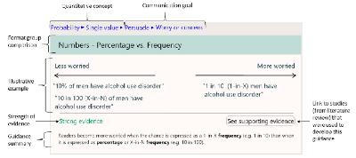
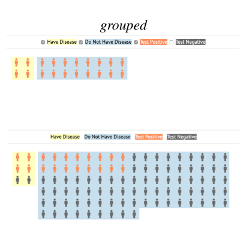
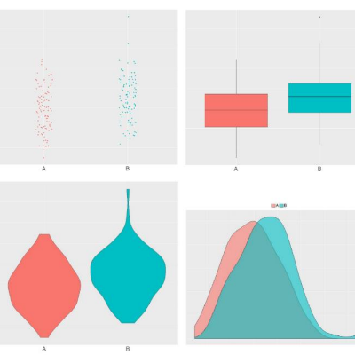
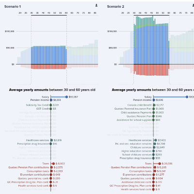
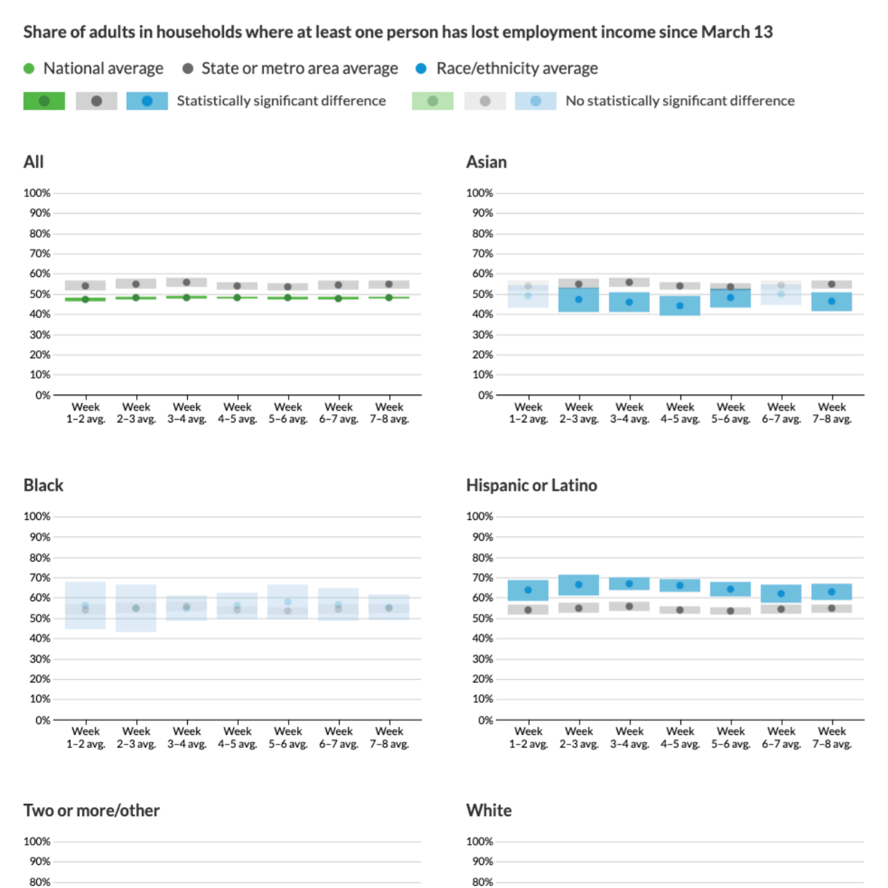
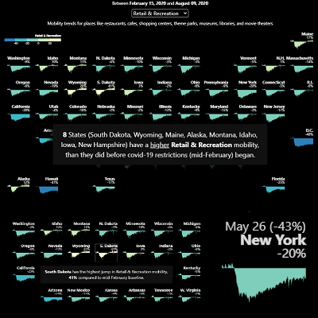
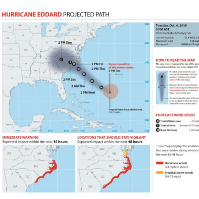

PROGRAM
VisComm Session 1: Communicating Health (12:00pm - 1:30pm)

Paper: Mapping the Landscape of COVID-19 Crisis VisualizationsYixuan Zhang, Yifan Sun, Sumit Barua, Enrico Bertini and Andrea G. Parker
Abstract: A great number of visualizations have been created to communicate the constantly changing crisis of the COVID-19 pandemic. With the prevalence of these crisis visualizations, there is a critical need to organize and understand what and how visualizations have been produced and disseminated....

Visual Case Study: COVID-19 Health Equity Dashboard - Addressing Vulnerable Populations Star Liu, Dr. Emily Wall, Dr. Shivani A. Patel and Yubin Park
Abstract: We present a case study of the COVID-19 Health Equity Dashboard, an open-source web-based interactive data visualization, that provides timely, localized, and actionable data of the ongoing COVID-19 pandemic. The dashboard features interactive maps and charts alongside population vulnerability characteristics....

Paper: Eating with a Conscience: Toward a Visual and Contextual Nutrition Facts Label Darius Coelho, Helen He, Maxim Baduk and Klaus Mueller
Abstract: The large variety of food products available in today’s market is making it increasingly difficult for the diet-conscious consumer to select the appropriate foods to maintain a balanced diet. To assist consumers, we design a visual nutrition facts label that provides the viewer with a quick overview of a food’s....

Paper: Making Numbers Meaningful – improving how we communicate numbers to patients and the public Dr. Natalie Benda, Brian Zikmund-Fisher, Mohit Manoj Sharma and Jessica Ancker
Abstract: Numbers are a crucial piece of visual communication of health-related information. There are currently multiple resources for communicating health-related information in plain language, but an equivalent resource for numeric information....

Liuhuaying Yang, Hui Cheng Ang and Shuyang Wang
Abstract: This visual case study was conducted by zaobao.sg, the digital platform of the Chinese dailies in Singapore. In early February, to inform and communicate with local audiences about the COVID-19 situation in Singapore, we built an interactive....

Paper: Does Interaction Improve Bayesian Reasoning with Visualization? Ab Mosca, Alvitta Ottley and Remco Chang
Abstract: Interaction enables users to effectively navigate large amounts of data, supports cognitive processing, and increases methods of data representation. However, beyond popular beliefs, there have been few attempts to empirically demonstrate whether adding interaction to a static visualization improves its function....
Break (1:30pm - 2:00pm)
VisComm Session 2: Public, Weather and Other Communication (2:00pm - 3:30pm)

Paper: Variable Biases: A Study of Scientists’ Interpretation of Plot Types Commonly Used in Scientific Communication Laura Matzen, Kristin Divis, Michael Haass and Dr. Deborah Cronin
Abstract: In scientific communication, there are visualization conventions that are widely used to convey uncertainty, such as representing the variability of a dataset with error bars. Yet prior research indicates that scientists frequently misinterpret error bars....

Visual Case Study: How do taxes, benefits and public spending evolve for a taxpayer during their lifetime? François Lévesque, Luc Godbout, Michaël Robert-Angers and Thomas Hurtut
Abstract: We present a visual case study conducted by the Research Chair in Taxation and Public Finance from Sherbrooke University, visually designed and developed in collaboration with Polytechnique Montreal. How do taxes, benefits and public....

Paper: Applying Racial Equity Awareness in Data Visualization Jonathan Schwabish and Alice Feng
Abstract: A data visualization style guide does for graphs what the Chicago Manual of Style does for English grammar: it defines the components of a graph and their proper, consistent use. At the Urban Institute, a nonprofit research institution based in Washington, DC, our data visualization style guide....

Visual Case Study: Tile Narrative: Scrollytelling with Grid Maps Pratap Vardhan
Abstract: This visual case study was built to study the effectiveness of scrollytelling in tandem with tile grid maps. Specifically, we built this interactive based on Google’s Community Mobility data measuring people’s movement before and during the COVID-19 pandemic. We designed a dynamic and interactive....

Mark Livingston and Derek Brock
Abstract: Visual forms of communication are ubiquitous in media, educational texts, government reports, and scientific publications. Two challenges immediately come to mind and drive the research agenda we have been following. We need to know that these graphs are provably understandable. We also need to know that the personnel....

Qian Ma and Barbara Millet
Abstract: This research explores diffusion of forecast messages on social media for Hurricane Dorian (2019) to understand how hurricane risk information is created, disseminated, and discussed in many-to-many communication modes. We....

Paper: Beautiful Visualizations Slain by Ugly Facts: Redesigning the National Hurricane Center’s ‘Cone of Uncertainty’ Map Barbara Millet, Alberto Cairo, Sharanya J. Majumdar, Carolina Diaz, Scotney D. Evans and Kenneth Broad
Abstract: The Track Forecast Cone, commonly known as the “cone of uncertainty”, is the most popular hurricane and tropical storm forecast product that the National....